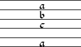
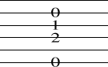
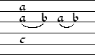
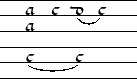
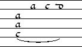
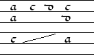
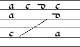

Next: Format fine tuning Up: abctab2ps User's Guide Previous: Scores Contents Index
If a tablature chord consists of only one plucked string the chord brackets can be omitted. If a chord only contains commas (eg. “,1” or “[,2]”), only the rhythm flag is printed.
The following example shows the notation of a tablature chord and its output in frenchtab and spanishtab (guitartab):
| [,abc,a] |  |  |
Remarks:
Please note that braces indicate grace notes in music lines. Since grace notes are not supported in tablature, braces are abused in tablature notation.
In german lute tablature, the symbols used for the sixth course (“Brummer”) vary from print to print: some use A B C D ..., some 1 A B C ... and others 1 2 3 4 ..., where the numbers are crossed through. You can choose the style with teh format parameter %%tabbrummer which can be one of ABC, 1AB or 123.
An other important difference concerns the interpretation of chords without any note length factor. In music, these chords inherit their length from the default length specified in the L: field. In tablature, these chords inherit their length from the length of the previous chord and the rhythm flag is omitted in the printed output (unless you explicitly ask for a flag on every note with %%taballflags). This means that you must specify the length factor "1" if you want a flag above a chord of the default length.
The shortcuts ">" and "<" for dotting work like in
music lines.
The code for triplets and general n-plets is the sec:MusicRhythm, eg. "(3[a,bc1]cd".
There is no consistent way for the notation of rests in tablature: most historic sources draw a flag with no fret letters, while modern editions often use modern rest signs. Which rests abctab2ps draws depends on the sec:TabFormatParameters: in “modern” and “modernbeams” style, abctab2ps draws modern style rests; in all other style old style rests are drawn. If you need an flag without letter in tabrhstyle modern, you can use empty chords, eg. “,1” or “[,2]”.
Like tablature chords, rests inherit their length from the previous chord or rest and they are only drawn if they explicitly have a rhythm factor. Moreover, invisible rests are indicated by x.
The following table lists all graces supported in tablature and whether they may appear within chord brackets ("applies to chord/note"):
| Input char | Meaning | Applies to |
| H (upper H) | fermata (also !fermata!) |
chord |
| S (upper S) | segno sign (also !segno!) |
chord |
| O (upper O) | coda sign (also !coda!) |
chord |
| !p! !pp! !mp! | dynamic marks (also !f! !ff! !mf! !sf! !sfz!) |
chord |
| . (dot) | right hand fingering: index finger. Is drawn as a single dot under lowest plucked course. |
chord |
| : (colon) | right hand fingering: middle finger. Is drawn as a double dot under lowest plucked course. |
chord |
| ; (semicolon) | right hand fingering: ring finger. Is drawn as a triple dot under lowest plucked course. |
chord |
| + (plus) | right hand fingering: thumb. Representation depends on tablature type: in spanishtab/guitartab it is drawn as a plus, in frenchtab or italiantab it is drawn as a vertical stroke. |
chord |
| ' (quote) | an accent after the note. In historic sources often used for an appoggiatura or trill from above. |
note |
| X (upper X) | an 'x' after the note. In historic sources often used for a trill or vibrato. |
note |
| U (upper U) | an U-shaped arc after the note. In historic sources often used for an appoggiatura or trill from below. |
note |
| V (upper V) | an U-shaped arc below the note. The only difference to "U" is that the arc is drawn below the tabletter rather than behind. |
note |
| # (sharp) | an '#' after the note. In historic sources used for a trill or vibrato. |
note |
| * (asterisque) | an '*' after the note. In historic sources used for a vibrato or bass note damping. |
note |
| T (upper T) | prints 'tr.' below the chord in italiantab. (also !trill!)
In frenchtab, it is drawn as an accent on the top note of the chord, because the 'tr.' symbol would interfere with bourdons. |
chord |
| L (upper L) | An oblique line under the note; when applied to
a chord, it is drawn under the bottom note of the chord.
In banjo tablature used to indicate longer notes; in baroque french tablature used to indicate an arpeggio. |
note |
| !strumup! | An arrow indicating a chord strummed bottom up | chord |
| !strumdown! | An arrow indicating a chord strummed top down | chord |
"Guitar chords" in tablature typically are not used for actual
guitar chord symbols, but for other stuff eg. left/right hand fingering.
Like in music, "guitar chords" can contain line breaks,
indicated by \n.
Here are some examples for tablature slurs: Please note, that the first tie in the second example is not possible in music because the opening parenthesis in the chord is not immediately closed in the next note.
|  |  |  | ||
| [,a(a,c] [„b)] („a „b) | [,aa,(c] ,c ([,d„c)] ,c) | [„aa(c] ,a ,c [,d„y)] |
Remarks:
!ten(!
for the start of a tenuto and !ten)! for the end of a tenuto.
These marks are only allowed inside chord brackets. To let them start
or end on an unplucked course, use the invisible fret symbol y.
Here are some examples which also show the use of the invisible fret symbol:
|  |  | |||
[,aa,!ten(!c] ,c \ |
,aa,c] [,c„!ten(!y] \ |
[,aa,!ten(!c] ,c \ |
||
| ,d [,cd,!ten)!a] | [,d„!ten)!y] [,cd,a] | [,d,!ten)!y] [,cd,a] |
In addition to the sec:LayoutParams, tablature format parameters can be of the type keyword which means a value from a list of special keywords.
The following parameters are supported:
| Parameter | abctab2ps option | Type | Description |
| tabfontsize | -tabsize | integer | distance (in pt) between tablature lines and (if tabfontscale=1.0) size of tablature font |
| tabfontscale | decimal | scale factor for tablature font. If greater than one, tablature letters/numbers are larger than the tablature line distance. Can be useful for fonts, which are too large or to small (eg. frFrancisque) for your taste. | |
| tabfontfrench | keyword | font file from which the font for french tablature is loaded. (see sec:TablatureFonts) | |
| tabfontitalian | keyword | font file from which the font for italian tablature is loaded. (see sec:TablatureFonts) | |
| tabfontgerman | keyword | font file from which the font for german tablature is loaded. (see sec:TablatureFonts) | |
| tabaddflags | integer | how many flags shall be added to tab rhythm signs. Eg. a value of 2 means that a quarter note (no flag) in music is printed as sixteenth (two flags) in tablature. Negative values are possible but probably not very useful. | |
| tabflagspace | dimension | additional space between rhythm flags and tablature system. Only necessary when the chosen tablature font exceeds its bounding box. | |
| tabgchordspace | dimension | space between gchord text and tablature system. | |
| tabrhstyle | keyword | style of the rhythm signs. Possible values are simple (headless 16c french style), grid (same as simple, but with support for beams), modern (17c french style with heads), modernbeams (same as modern, but with support for beams), diamond (italian 16c style with diamond shaped heads) or none (no rhythm flags at all). | |
| taballflags | logical | when true, rhythm flags are printed above all notes, even on those without a length factor | |
| tabfirstflag | logical | when true, rhythm flags are only printed when the rhythm changes or after a bar line | |
| tabledgeabove | logical | when true, ledger lines for french bourdons are printed above the note rather than before. | |
| tab8underline | logical | when true, the 8th course is marked with an underline in frenchtab and all following courses are drawn with one slash less. | |
| tabunderscoreis8 | logical | when true, {_a} denotes the 8th course
and is marked with an underline in frenchtab; other courses are drawn with
the specified number of slashes (in contrast to tab8underline). |
|
| tabbrummer | keyword | style for the sixth course (“Brummer”) in german tablature. Possible values are ABC, 1AB or 123. | |
| tabgermansepline | logical | when false, separator lines between german tablature systems are suppressed. |
Remarks:
frFrancisque itBorrono deFrakturIn the abc file you can specify the desired font files with the pseudocomments %%tabfontfrench, %%tabfontitalian and %%tabfontgerman, where the prefix in the font file name optionally may be omitted. Note that different fonts look best at different sizes: eg. frFrancisque should be at least 14pt, while itBorrono looks better at 13pt. Thus, when experimenting with different fonts you should experiment with different values for %%tabfontsize and %%tabfontscale too.
If you you have some minimal postscript knowledge, you can easily define your own tablature font: start with a given font file and replace the drawing routines for the individual letters or numbers with your own postscript routines. A font file with the prefix fr must define the postscript font FrenchTabfont, which is used in the drawing routines for french tablature. A font file with the prefix it must define the postscript font ItalianTabfont, which is used in the drawing routines for italian and spanish tablature.
The drawing routines in the default fonts are defined in a 20x20 system, you can change this with a different /FontBBox statement. For each character symbol, you should leave some top space in order to prevent the letters from touching each other. Additional bottom space for French fonts is not necessary because abctab2ps puts one point space between tablature lines and the symbols.
In order to make abctab2ps interpret your self defined font correctly, you must adhere to the following encoding scheme for frenchtab and italiantab (spanishtab):
| Character Codes | Symbols |
| 97-119 (ASCII 'a'-'w') | FrenchTabFont: letters for french tablature.
ItalianTabFont: numbers for italian tablature. Please note that 106 ('j') is not used; thus the eigth fret is code 105 ('i') and the nineth fret is 107 ('k'). There is no need to implement all codes; 97-111 ('a'-'o') should suffice for almost all purposes. |
| 121 (ASCII 'y') | should not be used, because it is reserved as an invisible anchor for slurs or decorations on unplucked courses. |
| 68-71 (ASCII 'D'-'G') | Numbers '4'-'7' for the french habit of numbering bourdons |
| 72-78 (ASCII 'H'-'O') | Numbers '8'-'15' for the italian habit of numbering bourdons |
If you need special tablature symbols like signs for tenuto signs or damping, you can use the high code lower case letters 'p'-'w' (112-119) for this purpose.
For germantab, you must adhere to the following encoding scheme:
| Character Codes | Symbols |
| 32-97 | symbols for courses 1-5, starting with course 5, fret 0 (c5f0, the
symbol '1' in germantab) and then c4f0, c3f0, c2f0, c1f0, c5f1, c4f1 etc.
There is no need to implement all codes; 32-87 (up to fret 12) should suffice for most purposes. |
| 128-143 | symbols for course 6 (“Brummer”) for %%tabbrummer = 'ABC' |
| 144-159 | symbols for course 6 (“Brummer”) for %%tabbrummer = '1AB' |
| 160-176 | symbols for course 6 (“Brummer”) for %%tabbrummer = '123' |